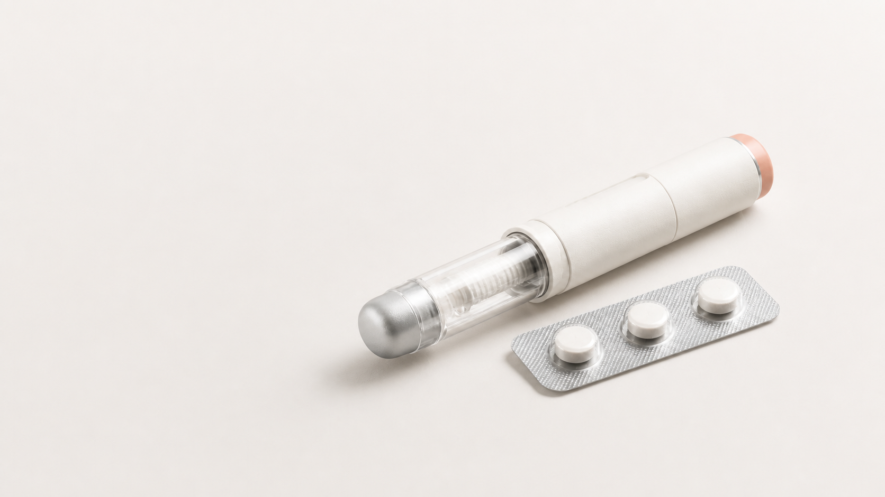
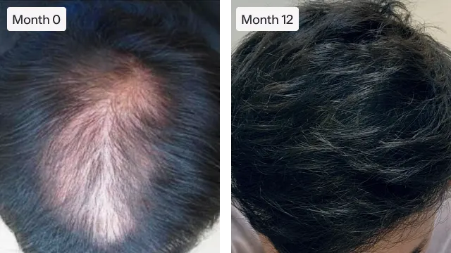
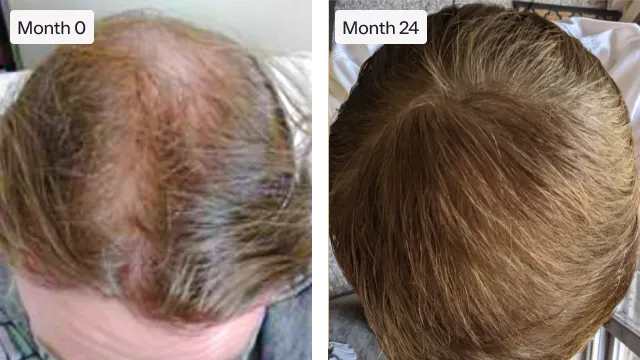
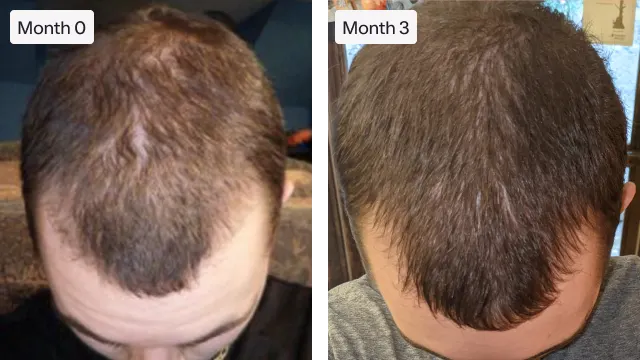
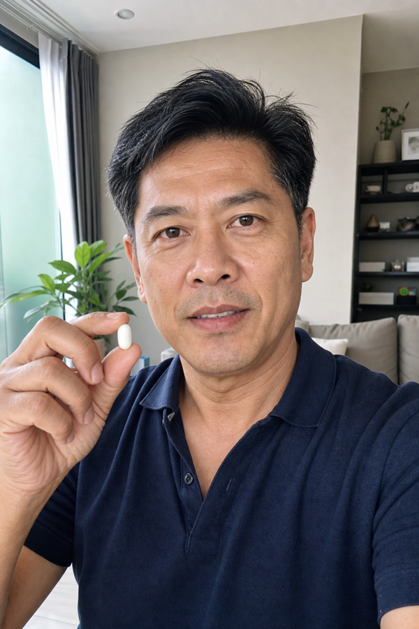
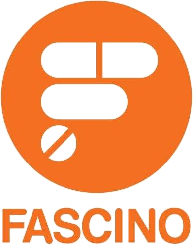
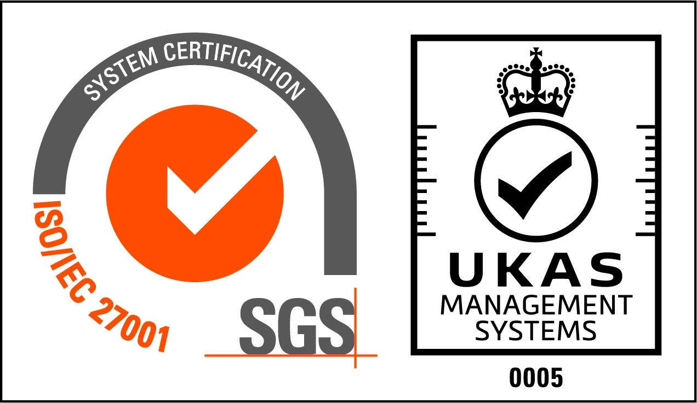

1
ตอบแบบประเมิน
เลือกเรื่องที่กังวลและตอบคำถามสุขภาพเบื้องต้น ใช้เวลาเพียง 1–2 นาที
เริ่มจากเรื่องที่กังวล คุยกับแพทย์ที่มีใบอนุญาต รับแผนการรักษาเฉพาะบุคคล และจัดส่งยาอย่างมิดชิด
*แนวทางการรักษาและตัวเลือกยาขึ้นอยู่กับการประเมินของแพทย์
ออนไลน์ 100%
เลือกเรื่องที่กังวลและตอบคำถามสุขภาพเบื้องต้น ใช้เวลาเพียง 1–2 นาที
ปรึกษาแพทย์แบบส่วนตัวผ่านวิดีโอ เสียง หรือแชท พร้อมรับคำแนะนำที่เหมาะกับคุณ
รับแผนการรักษา ติดตามผลกับแพทย์ และจัดส่งยาแท้ในบรรจุภัณฑ์มิดชิดถึงบ้าน
จัดการน้ำหนัก
ทางเลือกการดูแลที่เหมาะกับคุณ
เป้าหมาย แผนการดูแล และตัวเลือกยาขึ้นอยู่กับการประเมินรายบุคคล
เป้าหมายของคุณ
“รู้สึกว่ามีคนดูแลจริง ๆ แผนชัด เข้าใจง่าย และคุยกับหมอได้โดยไม่ต้องเดินทาง”
เสียงจากผู้ใช้งาน Krane

*ผลลัพธ์และความเหมาะสมของการรักษาแตกต่างกันในแต่ละบุคคล
สุขภาพเส้นผม
การดูแลที่เลือกได้ตามสาเหตุและเป้าหมาย
แพทย์ประเมินรูปแบบผมร่วง ประวัติสุขภาพ และเป้าหมายของคุณ
 เริ่มประเมิน
เริ่มประเมิน



*ภาพประกอบจาก draft เพื่อสื่อรูปแบบการติดตาม ผลลัพธ์แตกต่างกันในแต่ละบุคคล
สุขภาพผู้ชาย
ทางเลือกที่แพทย์พิจารณาให้เหมาะกับคุณ
ปรึกษาแพทย์แบบ 1 ต่อ 1 พร้อมทางเลือกที่เหมาะกับสุขภาพของคุณ
เป้าหมายของคุณ
“ขั้นตอนไม่ยุ่งยาก กล้าคุยมากกว่าที่คิด และเข้าใจทางเลือกของตัวเองชัดขึ้น”
เสียงจากผู้ใช้งาน Krane

*แนวทางการดูแลและตัวเลือกยาขึ้นอยู่กับการประเมินของแพทย์
เราไม่ใช่แค่คลินิกทั่วไป แต่เราคือ
ที่ได้รับอนุญาต
ดูแลครบในที่เดียว
คลินิกที่ได้รับอนุญาต
ให้บริการแพทย์ทางไกลโดยแพทย์ที่มีใบอนุญาต

ยาแท้ จัดส่งถึงบ้าน
จัดส่งโดยเครือข่ายร้านยาฟาสซิโน พร้อมบรรจุภัณฑ์มิดชิด
คุ้มครองตาม PDPA
ข้อมูลสุขภาพของคุณถูกใช้เพื่อการดูแลตามความยินยอมเท่านั้น

Powered by INET
โครงสร้างพื้นฐานพร้อมมาตรฐานความปลอดภัยระดับสากล
แพทย์ของ Krane
ทุกแผนเริ่มจากข้อมูลสุขภาพจริง และอยู่ภายใต้การประเมินของแพทย์ที่มีใบอนุญาต
พบทีมแพทย์ของเราประสบการณ์การดูแลที่ง่ายและเป็นส่วนตัว
“ดีมากและบริการดีมาก”คุณ @bright.mind
อ่านต่อเมื่ออยากรู้เพิ่ม
ใช้เวลาเพียง 5 นาทีในการกรอกแบบประเมินดิจิทัลและเริ่มสนทนาทางการแพทย์โดยตรงกับแพทย์เฉพาะทาง
ปรึกษาแพทย์เลย พัสดุกำลังเดินทางคาดว่าจะถึงคุณภายในวันนี้
พัสดุกำลังเดินทางคาดว่าจะถึงคุณภายในวันนี้